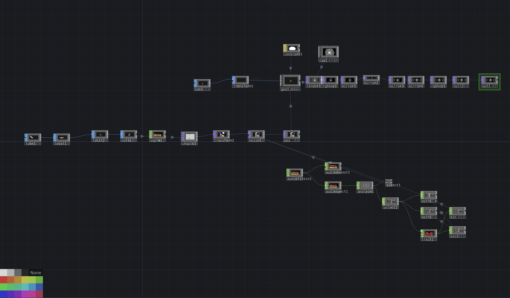
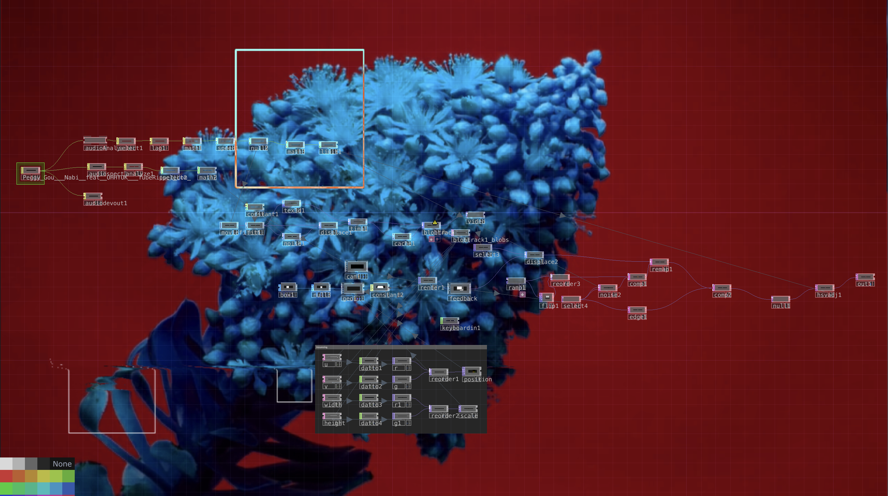

For this project, I made two different compositions and played with different perimeters in each, to see how those inputs change the generated images.
Comp 1
For the first one, I started with a tube, then to have it twisted twice on different axis to give it an interesting look. I then put the shape throught sopto and chopto operators to define our noise map.
Then, I drew a box and transform it into small scale for our partical usage, then to draw a geometry operator which has the data from the pos we drew before feed in. So now we have this interesting partical shapes based on our 3D shape. Then we set up the camera to tweak and refine how we want our composition to look like. Additionally, I introduce the audio file in and took the maximum and minimum and have them run through math, then to feed into noise to determine how the particles move (based on the audio).
Now, we have some interesting shape. To further make it more intersting, I started to have it mirrored multiple times.


Additionally, I tweaked some camera settings on the x translate and rotation. And have two more different shapes and results rendered.


Comp 2
First, I used the audio analysis to take out the kicks in the audio, then to sync our slo-motion video to that. Now we have a flower blossoming based on the tempo of the music. Then I feed the outcome into a displace operator to give it a bit more flare.

After that, I added blocltrack.

However, due to not having commercial license, I cannot have more complicated square spawning image. So I started with a box sop and have it go through geometry and feedbacks.

To make it visually more appealing, I made the boxes inverted.

After that, I added another hsv adjustment at the end before the outcome.

I'm still not satisfied, so I played with some more settings to refine the displacement to have results below:


Making another geometry to connect lines and boxes. We don't have the commercial licenses so the render we got is limited. But this is how it looks like:
push again